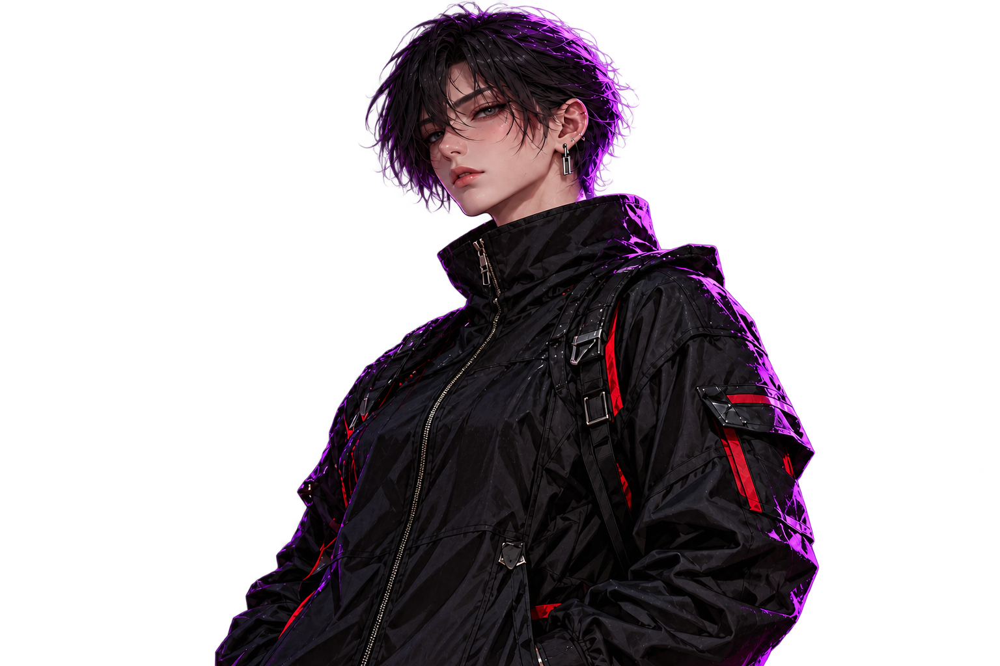

Príprava pódia
Pomoc s rozmiestnením techniky, označením pozícií a prípravou pracovného priestoru podľa pokynov produkcie.

Technická podpora. Precízna príprava.
Pódium. Káble. Technika.
Technická asistencia pre festivaly a produkčné tímy — od prípravy po odovzdanie vybavenia.
Pomoc s rozmiestnením techniky, označením pozícií a prípravou pracovného priestoru podľa pokynov produkcie.
Ukladanie a označovanie káblov, prehľadné trasy a pomoc pri zapájaní techniky podľa plánu tímu.
Príprava mikrofónových stojanov, prenášanie vybavenia a asistencia pri zvukových skúškach.
3 úlohy. 30 sekúnd. Jeden Maťo.
Čo sa môže pokaziť?
Zapoj káble. Rozsvieť stage. Nájdi Maťa.
Máš 30 sekúnd, žiadne výhovorky a podozrivo málo spánku.
Myš, dotyk aj klávesnica. Káble môžeš spojiť aj dvoma kliknutiami.
Vysielačka: Stage stojí. Zatiaľ.
0 / 3 HOTOVÉRekord zostane len v tejto relácii; prehliadač nepovolil lokálne uloženie.
01 / PRED OTVORENÍMmato nefazuj sa
02 / ZA PÓDIOMkeby som vzduch tak tam neprejdem
03 / PRED SKÚŠKOUnema preco to nefungovat
Oficiálne meranie neoficiálnej situácie.
Zatiaľ vieme, kde je stage.